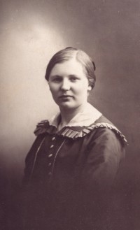

Jenny Sofie Hamland
K, #631, f. 1 september 1899, d. 16 desember 1970
Foreldre

Jenny Sofie Hamland, g. Laugen
Biografi
Jenny Sofie Hamland ble født den 1 september 1899 Torland, Nærøy, Nord-Trøndelag. Hun giftet seg med
Arthur Høineman Laugen sønn av
Johan Arnt Guneriussen Laugen og
Eliette Sedorie Skaftnesmo, den 6 januar 1935 Lundring kirke, Nærøy, Nord-Trøndelag
+. Jenny Sofie Hamland døde den 16 desember 1970 Nærøy, Nord-Trøndelag. Hun ble gravlagt den 21 desember 1970 Steine gravsted, Nærøy, Nord-Trøndelag.
Jenny Sofie Hamland was also known as Jenny Sofie Laugen. Hun ble døpt den 22 oktober 1899 Nærøy, Nord-Trøndelag. Hun ble konfirmert den 18 juli 1915 Steine kapell, Nærøy, Nord-Trøndelag. Hun fikk karakteren "Meget godt". Hun og
Arthur Høineman Laugen hadde ingen egne barn. De hadde Jennys brordatter, Aud, som fosterbarn. Hun eide den 2 november 1970 Vassdalen 26/24, Storval, Nærøy, Nord-Trøndelag.
| Sist redigert |
30 juli 2022 18:36:56 |
| Slektskap | 4-menning 2 ganger forskjøvet til Håkon Wahl |
Vedik Benjaminsen Mulstad
M, #632, f. 11 juni 1821, d. 6 januar 1912
Foreldre
Biografi
Vedik Benjaminsen Mulstad ble født den 11 juni 1821 Værem; gnr. 43, Kolvereid, Nærøy, Nord-Trøndelag. Han giftet seg med
Anne Sofie Olsdatter Fjær datter av
Ole Pedersen Fjær og
Kirsten Sørensdatter, den 28 desember 1852 Kolvereid kirke, Nærøy, Nord-Trøndelag. Vedik Benjaminsen Mulstad giftet seg med
Ingeborg Anna Paulsdatter datter av
Paul Gjermundsen og
Johanne Iversdatter, den 3 januar 1884 Kolvereid kirke, Nærøy, Nord-Trøndelag. Vedik Benjaminsen Mulstad døde av hjerneslag den 6 januar 1912 Kolvereid, Nærøy, Nord-Trøndelag. Han ble gravlagt den 12 januar 1912 Kolvereid kirkegård, Nærøy, Nord-Trøndelag.
| Sist redigert |
14 juli 2022 23:36:32 |
| Slektskap | 4-menning 4 ganger forskjøvet til Håkon Wahl |
Ingeborg Anna Paulsdatter
K, #633, f. 5 mai 1842, d. 3 februar 1922
Foreldre
Biografi
Ingeborg Anna Paulsdatter ble født den 5 mai 1842 Geisnes; Kolvereid, Nærøy, Nord-Trøndelag. Hun giftet seg med
Vedik Benjaminsen Mulstad sønn av
Benjamin Mortensen Værem og
Elen Nilsdatter Langstrand, den 3 januar 1884 Kolvereid kirke, Nærøy, Nord-Trøndelag. Ingeborg Anna Paulsdatter døde den 3 februar 1922 Kolvereid, Nærøy, Nord-Trøndelag. Hun ble gravlagt den 6 august 1922 Kolvereid kirkegård, Nærøy, Nord-Trøndelag.
Ingeborg Anna Paulsdatter was also known as Ingeborg Anna Mulstad. Hun ble døpt den 25 august 1842 Kolvereid kirke, Nærøy, Nord-Trøndelag.
| Sist redigert |
6 mars 2016 00:00:00 |
Henny Elfrida Gansmo
K, #634, f. 18 juli 1906, d. 27 mai 1979
Foreldre
Biografi
Henny Elfrida Gansmo ble født den 18 juli 1906 Mulstad; Kolvereid, Nærøy, Nord-Trøndelag. Hun giftet seg med
Herold Kristensen Strand sønn av
Kristen Hansen Oterbekk og
Ellen Valborg Jacobsdatter Strand, den 21 november 1930 Kolvereid kirke, Nærøy, Nord-Trøndelag. Henny Elfrida Gansmo døde den 27 mai 1979 Nærøy, Nord-Trøndelag. Hun ble gravlagt den 2 juni 1979 Kolvereid kirkegård, Nærøy, Nord-Trøndelag.
Henny Elfrida Gansmo was also known as Henny Elfrida Strand. Hun ble døpt den 23 september 1906 Kolvereid kirke, Nærøy, Nord-Trøndelag. Hun ble konfirmert den 18 juli 1921 Kolvereid kirke, Nærøy, Nord-Trøndelag.
| Sist redigert |
10 august 2010 00:00:00 |
| Slektskap | 4-menning 2 ganger forskjøvet til Håkon Wahl |
Olga Eugine Gansmo
K, #635, f. 4 februar 1910, d. 27 juni 1972
Foreldre
| Datter | Anna Marie Dybvik+ (f. 25 juni 1938, d. 13 september 2022) |
| Datter | Gunvor Anna Dybvik+ (f. 7 februar 1944) |
Biografi
Olga Eugine Gansmo was also known as Olga Eugine Tømmervik. Hun was also known as Olga Eugine Dypvik. Hun ble døpt den 15 mai 1910 Kolvereid kirke, Nærøy, Nord-Trøndelag. Hun ble konfirmert den 12 juli 1925 Kolvereid kirke, Nærøy, Nord-Trøndelag.
| Sist redigert |
6 mars 2016 00:00:00 |
| Slektskap | 4-menning 2 ganger forskjøvet til Håkon Wahl |
Hilma Leonora Gansmo
K, #636, f. 6 januar 1912, d. 2 oktober 1997
Foreldre
Familie: Karl Olai Olsen Bogen (f. 8 november 1905, d. 16 mai 1989)
| Sønn | Odd Petter Bogen (f. 11 juni 1943) |
| Sønn | Fritz Arne Bogen (f. 11 juni 1943) |
Biografi
Hilma Leonora Gansmo was also known as Hilma Leonora Bogen. Hun ble døpt den 26 mai 1912 Kolvereid kirke, Nærøy, Nord-Trøndelag.
| Sist redigert |
6 mars 2016 00:00:00 |
| Slektskap | 4-menning 2 ganger forskjøvet til Håkon Wahl |
Fredrik Christian Grevenkopf Gansmo, Jr.
M, #637, f. 25 september 1915, d. 16 juni 1998
Foreldre
| Datter | Heidi Elisabet Grevenkop Gansmo+ (f. 19 november 1970) |
Biografi
Fredrik Christian Grevenkopf Gansmo, Jr., ble født den 25 september 1915 Øksninga, Kolvereid, Nærøy, Nord-Trøndelag. Han døde den 16 juni 1998 Nærøy, Nord-Trøndelag. Han ble gravlagt den 24 juni 1998 Kolvereid kirkegård, Nærøy, Nord-Trøndelag.
Fredrik Christian Grevenkopf Gansmo, Jr., ble døpt den 24 oktober 1915 Kolvereid kirke, Nærøy, Nord-Trøndelag. Han kjøpte den 17 november 1934 Øksninga 19/1, Kolvereid, Nærøy, Nord-Trøndelag, på tvangsauksjon for 6.000 kroner. Han var ugift.
| Sist redigert |
4 august 2022 15:46:53 |
| Slektskap | 4-menning 2 ganger forskjøvet til Håkon Wahl |
Magnhild Ingeborg Fredriksdatter Gansmo
K, #638, f. 25 september 1915, d. 27 januar 2010
Foreldre
Familie: Paul Mandal (f. 19 mai 1915, d. 18 februar 1976)
| Datter | Brit Paulsdatter Mandal (f. etter 1935) |
| Sønn | Rolf Paulsen Mandal (f. 6 juli 1952) |
Biografi
Magnhild Ingeborg Fredriksdatter Gansmo ble født den 25 september 1915 Øksninga, Kolvereid, Nærøy, Nord-Trøndelag. Hun giftet seg med
Paul Mandal. Hun døde den 27 januar 2010 Trondheim, Sør-Trøndelag. Hun ble gravlagt den 4 februar 2010 Moholt kirkegård, Trondheim, Sør-Trøndelag.
Magnhild Ingeborg Fredriksdatter Gansmo was also known as Magnhild Ingeborg Mandal. Hun ble døpt den 24 oktober 1915 Kolvereid kirke, Nærøy, Nord-Trøndelag.
| Sist redigert |
12 september 2021 00:00:00 |
| Slektskap | 4-menning 2 ganger forskjøvet til Håkon Wahl |
Jorun Hildeborg Gansmo
K, #639, f. 25 juli 1918, d. 20 januar 2009
Foreldre
Biografi
Jorun Hildeborg Gansmo ble født den 25 juli 1918 Øksninga, Kolvereid, Nærøy, Nord-Trøndelag. Hun giftet seg med
Henry Johannes Wang sønn av
Gerhard Johannes Wang og
Anna Konstanse Kristiansdatter Reppen, i 1942. Jorun Hildeborg Gansmo døde den 20 januar 2009 Nærøy bo- og behandlingssenter, Kolvereid, Nærøy, Nord-Trøndelag. Hun ble gravlagt den 29 januar 2009 Gravvik kirke, Nærøy, Nord-Trøndelag.
Jorun Hildeborg Gansmo was also known as Jorun Hildeborg Wang. Hun ble døpt den 30 november 1918 Kolvereid kirke, Nærøy, Nord-Trøndelag.
| Sist redigert |
7 mars 2016 00:00:00 |
| Slektskap | 4-menning 2 ganger forskjøvet til Håkon Wahl |
Aslaug Elisabeth Gansmo
K, #640, f. 14 november 1908, d. 13 mai 1984
Foreldre
Familie 2: Alf Osvald Sandøy (f. 13 september 1912, d. 8 mai 1991)
| Sønn | Einar Sandøy (f. 15 august 1942) |
| Datter | Aud Sandøy (f. 31 desember 1944, d. 12 oktober 2011) |
Biografi
Aslaug Elisabeth Gansmo was also known as Aslaug Elisabeth Sandøy. Hun ble døpt den 31 januar 1909 Kolvereid kirke, Nærøy, Nord-Trøndelag. Hun kjøpte i 1946 Åsli 26/29, Storval, Nærøy, Nord-Trøndelag.
| Sist redigert |
1 oktober 2020 00:00:00 |
| Slektskap | 4-menning 2 ganger forskjøvet til Håkon Wahl |
Svein Vibstad Helmersen Gansmo
M, #641, f. 6 juni 1847, d. 26 mars 1932
Foreldre
Biografi
Svein Vibstad Helmersen Gansmo ble født den 6 juni 1847 Øksninga; Kolvereid, Nærøy, Nord-Trøndelag. Han giftet seg med
Anna Margrete Hermansdatter Stene datter av
Herman Clausen og
Ragnhild Torkildsdatter Varøy, den 8 juli 1873 Nærøy, Nord-Trøndelag. Svein Vibstad Helmersen Gansmo giftet seg med
Mikaline Schwartskopf Jørgensdatter Bull datter av
Jørgen Andreas Michelsen Bull og
Ingeborg Anna Benjaminsdatter, den 1 oktober 1892 Kolvereid, Nærøy, Nord-Trøndelag. Svein Vibstad Helmersen Gansmo døde den 26 mars 1932 Øksninga, Kolvereid, Nærøy, Nord-Trøndelag. Han ble gravlagt den 6 april 1932 Kolvereid kirkegård, Nærøy, Nord-Trøndelag.
Svein Vibstad Helmersen Gansmo ble døpt den 7 november 1847 Kolvereid kirke, Nærøy, Nord-Trøndelag. Han ble konfirmert den 12 juli 1863 Kolvereid kirke, Nærøy, Nord-Trøndelag.
| Sist redigert |
7 mars 2016 00:00:00 |
| Slektskap | 3-menning 3 ganger forskjøvet til Håkon Wahl |
Mikaline Schwartskopf Jørgensdatter Bull
K, #642, f. 24 februar 1870, d. 23 desember 1932
Foreldre
Biografi
Mikaline Schwartskopf Jørgensdatter Bull was also known as Mikaline Schwartskopf Gansmo. Hun ble døpt den 17 juli 1870 Nærøy, Nord-Trøndelag.
| Sist redigert |
7 mars 2016 00:00:00 |
| Slektskap | 3-menning 4 ganger forskjøvet til Håkon Wahl |
Helmer Julius Gansmo
M, #643, f. 1810, d. 6 februar 1869
Foreldre
Biografi
Helmer Julius Gansmo var sersjant, furer og gårdbruker.
| Sist redigert |
14 juli 2022 23:35:31 |
Anetta Regine Petersdatter Wendelbo
K, #644, f. 10 september 1816, d. 28 april 1894
Foreldre
Biografi
Anetta Regine Petersdatter Wendelbo ble født den 10 september 1816 Foldereid, Nærøy, Nord-Trøndelag. Hun giftet seg med
Helmer Julius Gansmo sønn av
William Johnsen Gansmo og
Gjertrud Margrete Hallesdatter Tetlien, den 21 april 1839. Anetta Regine Petersdatter Wendelbo døde den 28 april 1894 Øksninga; Kolvereid, Nærøy, Nord-Trøndelag. Hun ble gravlagt den 13 mai 1894 Kolvereid kirkegård, Nærøy, Nord-Trøndelag.
Anetta Regine Petersdatter Wendelbo was also known as Anetta Regine Gansmo.
| Sist redigert |
8 mars 2016 00:00:00 |
| Slektskap | Søskenbarn 4 ganger forskjøvet til Håkon Wahl |
{kind=link}